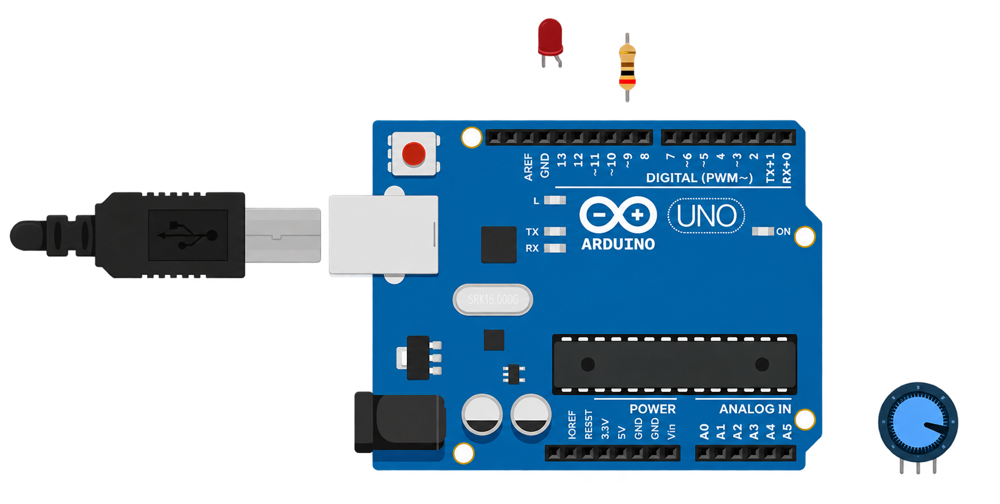
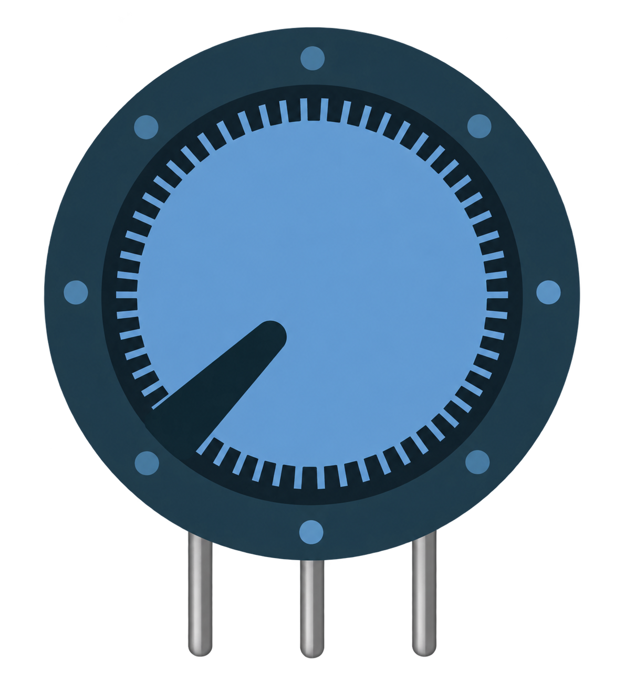
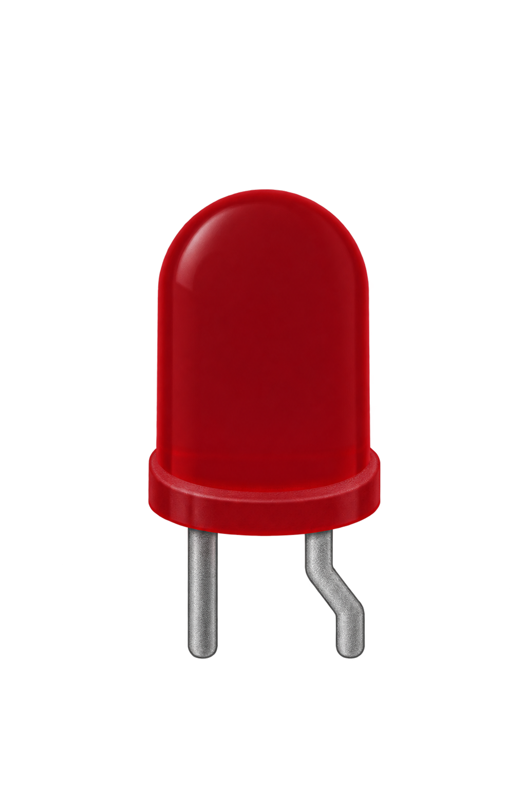
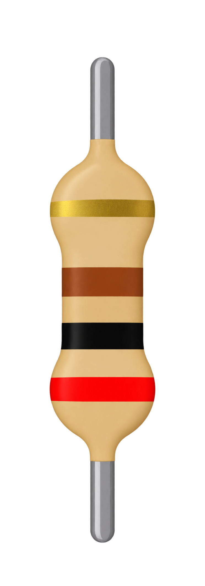

Віртуальна схема
Спочатку розглянь деталі, потім підключи три контакти.

Деталі розташовані окремо. Розглянь контакти перед під'єднанням.

Потенціометр
Світлодіод
РезисторПісля трьох підключень схема покаже дроти. Запусти симуляцію: коли A0 досягне 512, світлодіод загориться.